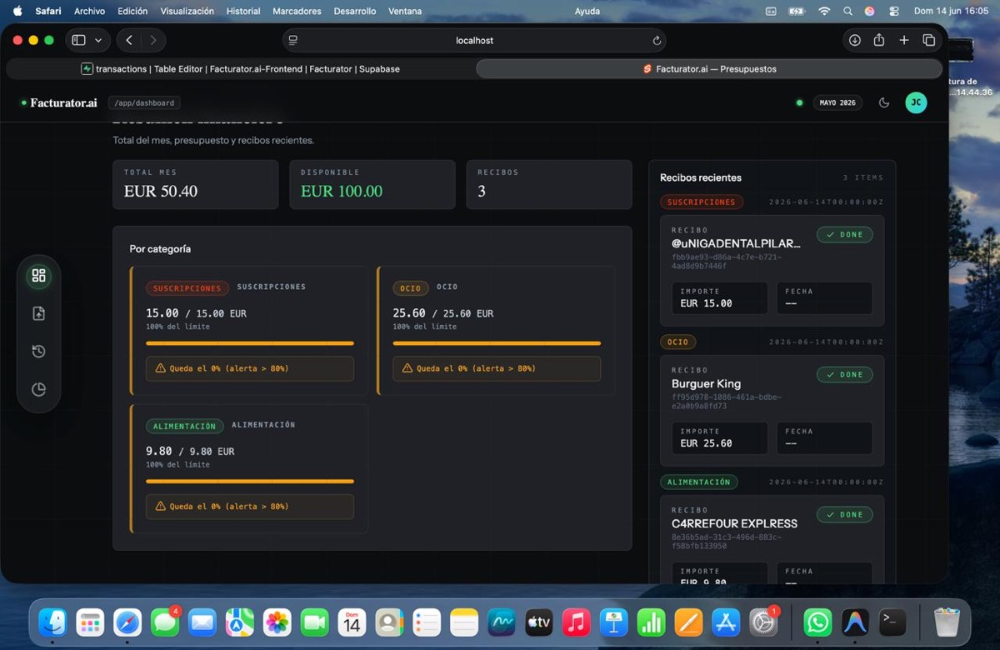

Project list
Showing all 7 projects.
-

Featured project Facturator.ai — AI-powered SaaS platform
CompletedA complete SaaS ecosystem for intelligent extraction, OCR processing and accounting management of invoices and receipts. Modular architecture with a transactional backend in Go (WebSockets, Stripe, PostgreSQL/Supabase), a computer-vision microservice and ETL pipelines in Python, and a reactive SvelteKit frontend in TypeScript.
- Go
- Python
- SvelteKit
- TypeScript
- PostgreSQL
- Stripe
- Docker
-
Code on GitHub Match-TFE
CompletedPlatform to streamline the coordination and assignment of final-year projects at the School of Computer Engineering. Includes Docker Compose deployment (dev and release), Drizzle ORM on PostgreSQL and email notifications with a configurable cron.
- TypeScript
- Node.js
- Drizzle ORM
- PostgreSQL
- Docker
-
Code on GitHub Standards and Web Computing (Master's)
In progressCoursework for the Master's in Web Engineering: this personal website, a performance comparison between native WebAssembly and JavaScript, VONA (XML processing with WebAssembly) and a static website generator driven by XML documents.
- HTML5
- WebAssembly
- XML
- TypeScript
- GitHub Pages
-
Code on GitHub Language compiler (MAPL)
CompletedA complete compiler for the MAPL abstract machine. Implements lexical and syntactic analysis with a formal grammar, semantic analysis with type checking and a symbol table, memory offset calculation and executable object code generation.
- Java
- Compilers
- Grammars
- MAPL
- AST
-
Code on GitHub Car Workshop — Dual persistence
CompletedBusiness management system with a comparative study of relational persistence. Empirical analysis of cursors and concurrency conflict resolution in JDBC, together with a double implementation of the domain: pure transactional JDBC vs. JPA / Hibernate.
- Java
- JDBC
- JPA / Hibernate
- Concurrency
- SQL
-
Code on GitHub OS mechanisms and concurrency
CompletedLow-level C developments on the kernel and POSIX standards: process management (fork/exec), synchronisation with semaphores and mutexes in critical sections, inter-process communication (pipes, FIFOs, signals) and scheduling algorithms.
- C
- POSIX
- Kernel APIs
- Multithreading
- IPC
-
View demo Personal website with W3C standards (SEW)
CompletedWebsite developed for the Software and Web Standards (SEW) course of the Bachelor's degree in Computer Engineering. Built with pure semantic HTML5, a modular CSS architecture based on structural selectors, WCAG 2.1 AA accessibility and accessible vanilla JavaScript.
- HTML5
- CSS3
- JavaScript
- WCAG 2.1 AA
- SEW